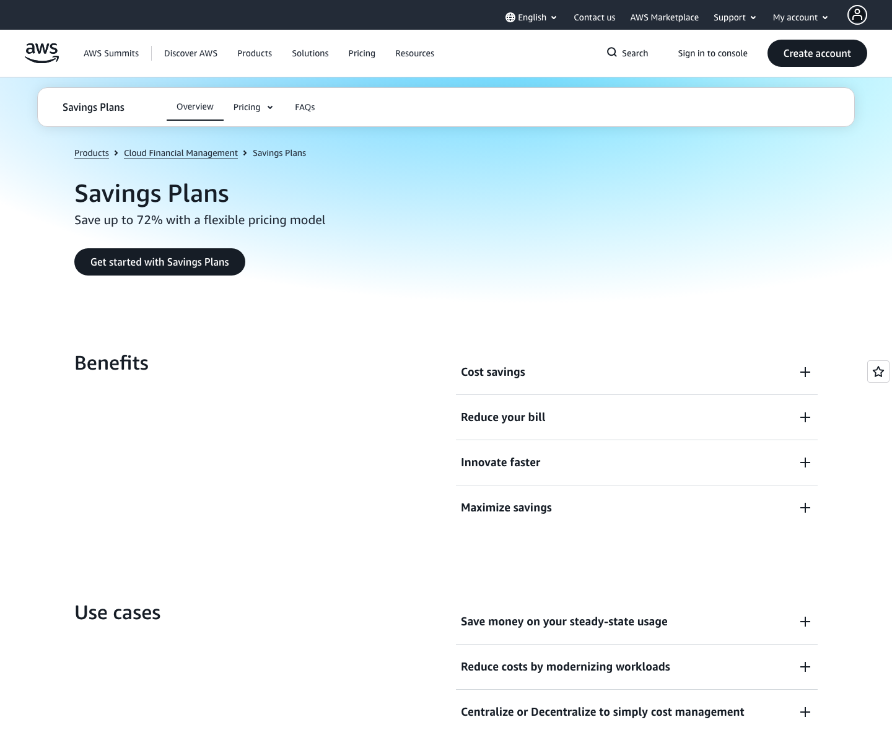
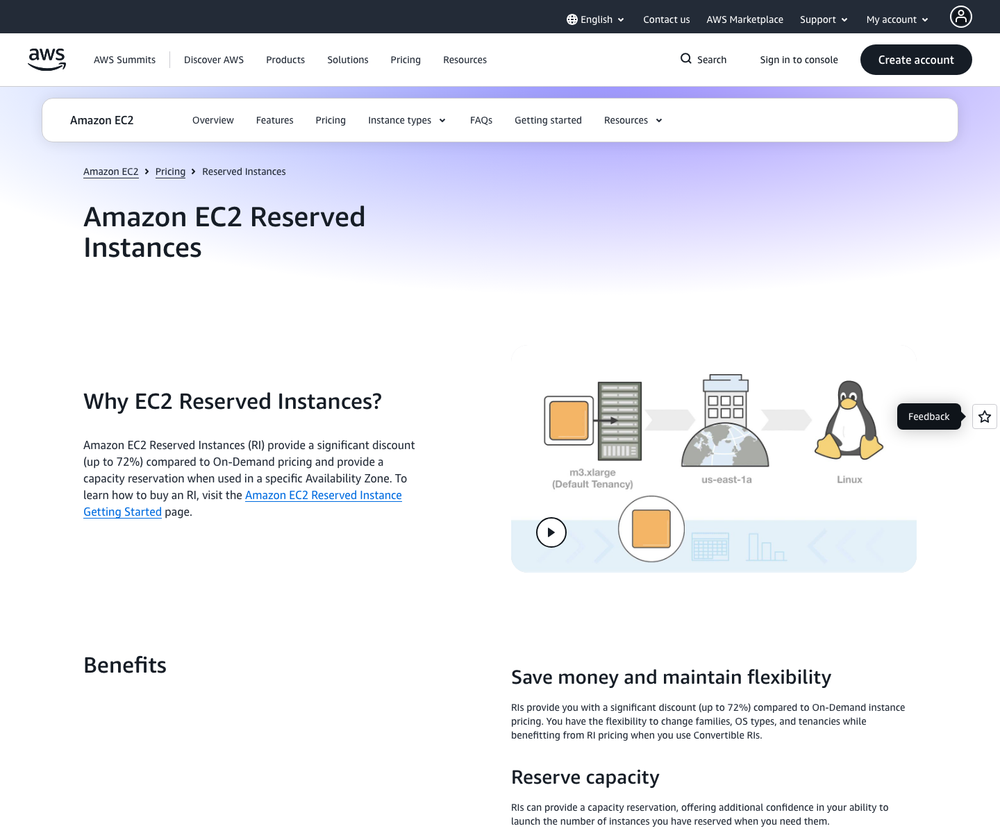

Pricing Page Visual

The mechanism to notice is commitment coverage: AWS presents Savings Plans as a flexible pricing model for steady-state usage savings.
Source reviewed: May 16, 2026 · Screenshot captured: May 17, 2026

EC2 Reserved Instances support the capacity-reservation boundary in this case: zonal EC2 RIs can provide reserved capacity, while Savings Plans do not provide EC2 capacity reservation.
Source reviewed: May 16, 2026 · Screenshot captured: May 17, 2026
Core Insight / Decision Core
This case monetizes infrastructure predictability by changing the effective compute rate when customers exchange future usage flexibility for a one- or three-year commitment.
Pricing Logic Deconstruction
The bill changes when eligible usage is covered by a commitment.
Covered usage receives discounted effective pricing instead of fully flexible On-Demand pricing.
The blended bill depends on covered usage, uncovered usage, and any committed value that actual usage does not consume.
The buyer accepts a one- or three-year commitment when predictable workloads make the discount worth the flexibility trade off.
Strategic Logic
Hypothesized pricing-relevant causal logic. Not AWS-stated intent.
Driver Logic
Primary component: driver_logic
Eligible usage covered by commitment receives discounted effective pricing.
Longer commitments generally trade more flexibility for stronger savings potential.
Payment timing changes the economics of the commitment without changing the core bill driver.
Flexible commitments preserve workload movement; specific commitments can narrow the coverage boundary.
Usage beyond commitment remains exposed to On-Demand pricing.
Savings Plans do not provide EC2 capacity reservation; zonal EC2 Reserved Instances can.
Bill Examples
Illustrative bill logic only. Exact discounts depend on AWS product rules and dated pricing tables.
| Scenario | Base layer | Variable layer | Final bill logic | Pricing lesson |
|---|---|---|---|---|
| Predictable workload covered by commitment | On-Demand rate for eligible usage | Commitment discount applies to covered usage. | Covered usage is billed at discounted commitment pricing instead of On-Demand pricing. | Forecastable usage becomes cheaper when the customer trades flexibility for commitment coverage. |
| Usage exceeds commitment | Committed usage charge plus On-Demand exposure | Usage beyond the active commitment is billed at regular On-Demand rates. | The blended bill rises because excess usage remains outside the savings envelope. | Under-commitment preserves flexibility but leaves incremental usage exposed. |
| Commitment is underused | Committed usage obligation | Actual covered usage is lower than the committed level. | The customer still carries commitment exposure, so expected savings can disappear. | The discount is valuable only when the customer can use enough of the commitment. |
| Zonal EC2 RI for capacity assurance | EC2 usage matching RI attributes | Zonal RI can provide capacity reservation plus discounted RI pricing for matching attributes. | The buyer receives discount mechanics and capacity assurance, unlike a Savings Plan alone. | Capacity assurance is a different pricing boundary from generic commitment discount coverage. |
Pricing Architecture
Structure only: the page compares commitment vehicles as support, while driver_logic remains the primary mechanism.
| Commitment vehicle | Commitment basis | Flexibility boundary | Capacity reservation |
|---|---|---|---|
| EC2 Reserved Instances | EC2 RI attributes and one- or three-year term | Attribute match and RI class determine how the discount applies. | Zonal EC2 Reserved Instances can provide capacity reservation. |
| Savings Plans | Specific usage commitment measured over time | Plan type determines eligible usage coverage and flexibility. | Savings Plans do not provide EC2 capacity reservation. |
Term choice structures the commitment horizon.
Payment timing is a pricing parameter for commitment economics.
The bill is easiest to understand by separating usage into these states.
Each trigger moves the buyer into a different pricing state.
Boundary Crossing Map
Where the buyer crosses into a different pricing state.
Decision Tension Layer
The pricing tension is caused by commitment coverage: lower effective cost requires forecasting confidence and less future flexibility.
Under-commitment leaves usage On-Demand; over-commitment creates unused commitment exposure.
The more specific the commitment boundary, the more important workload stability becomes.
Savings Plans discount coverage should not be mistaken for EC2 capacity reservation.
Decision Alternatives
Concrete pricing interface moves, trade offs, and leading indicators.
Expected effect: Better commitment sizing discipline.
Trade off: Commitment risk becomes more salient.
Leading indicator: Lower post-purchase commitment underutilization.
Expected effect: Buyers focus on what changes the bill.
Trade off: Advanced product differences may need a second layer.
Leading indicator: More buyers set explicit coverage targets.
Expected effect: Fewer category errors.
Trade off: Adds another decision step.
Leading indicator: Fewer customers expect Savings Plans to reserve EC2 capacity.
Decision Priority
Which pricing move should be tested first, and why.
| Rank | Move | Why this priority | Risk | Complexity | Success metric |
|---|---|---|---|---|---|
| 1 | Coverage-first purchase flow | It targets the fastest comprehension problem: covered, uncovered, or underused usage. | Low | Medium | More buyers correctly identify bill exposure before purchase. |
| 2 | Underuse-risk calculator | It reduces the main customer-side failure mode but needs more usage-forecast modeling. | Medium | Medium | Lower commitment underutilization among calculator users. |
| 3 | Capacity-reservation separation | It fixes an important category error for customers evaluating EC2 capacity assurance. | Low | Low | Lower capacity-reservation confusion in feedback or support signals. |
Reasoning Error Check
Stress test the pricing logic before accepting the recommendation.
| Reasoning risk | Case-specific check | Evidence needed | Failure signal |
|---|---|---|---|
| Strategic intent overclaim | Keep uncertainty monetization framed as analytical interpretation. | Official AWS strategy language would be needed to state intent. | The page presents the interpretation as AWS-stated intent. |
| RI and Savings Plans blur | Keep capacity reservation separate from Savings Plans discount coverage. | Official AWS documentation on capacity reservation behavior. | A reader believes Savings Plans provide EC2 capacity reservation. |
| Exact discount overreach | Avoid precise savings examples not traceable to dated AWS pricing tables. | AWS pricing tables or calculator output for exact examples. | The page gives unsupported precise savings. |
| Pure-savings framing | Keep underuse risk and flexibility loss visible beside discount logic. | Commitment utilization reporting would validate practical risk size. | The page teaches buyers to maximize discount depth without showing utilization risk. |
Evidence and Pricing Artifact Notes
AWS official pages support commitment, term, payment option, discount relative to On-Demand, On-Demand exposure beyond commitment, and capacity-reservation distinctions.
The uncertainty-monetization framing is this case's analytical interpretation of the pricing mechanics, not AWS-stated causal intent.
Dated local screenshots were captured from the official AWS EC2 Reserved Instances page and AWS Savings Plans page on May 17, 2026. No third-party or non-official screenshots are used here.
- Amazon Web Services. (n.d.). Amazon EC2 Reserved Instances. Retrieved May 16, 2026, from https://aws.amazon.com/ec2/pricing/reserved-instances/
- Amazon Web Services. (n.d.). Savings Plans. Retrieved May 16, 2026, from https://aws.amazon.com/savingsplans/
- Amazon Web Services. (n.d.). Savings Plans FAQs. Retrieved May 16, 2026, from https://aws.amazon.com/savingsplans/faqs/
- Amazon Web Services. (n.d.). Compute Savings Plans pricing. Retrieved May 16, 2026, from https://aws.amazon.com/savingsplans/compute-pricing/